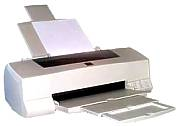

| Струйный принтер (liquid
ink jet printer) — последовательное матричное безударное печатающее устройство. |

|
Технология
печати — краситель (чернила) разбрызгивается через канальные отверстия
в печатающей головке. Количество отверстий — от 12 до 64.
Разрешающая
способность до 1440 dpi.
Качество
печати зависит от используемой бумаги. Наиболее высокое качество, близкое
к фотографическому, достигается на специальной бумаге для струйных принтеров.
Скорость
печати — при высоком качестве обычно 2–3 страницы в минуту, максимальная
скорость — до 7 страниц в минуту (печать текста). При печати цветной графики
(фотографии) время печати — до 5–7 минут на лист формата А4.
Стандатрный
ресурс картриджа (заправки чернилами) — при 10% заполнении (печать текста)
от 500 до 1000 копий формата А4, при полноцветной печати (фотографии) 50–70
копий формата А4.
Принципы печати
Технология
Canon–HP. В принтерах фирм Hewlett Paccard и Canon используется bubble-jet-метод
печати ("пузырьковая" технология). В канале головки находится быстродействующий
нагревательный элемент (тонкопленочный резистор). При пропускании тока
он за несколько микросекунд нагревается до 500 градусов и отдает тепло
окружающим чернилам. Образуется чернильный паровой пузырь, который выталкивает
через отверстие сопла каплю. При отключении тока резистор остывает, паровой
пузырь сокращается и за счет разрежения подсасывается новая порция чернил.
Технология
Epson-Brother. В принтерах фирм Epson, Brother, Dataproducts, Tektronics
используется метод piezo ink-jet (пьезоэлектрическая технология). В канале
головки установлен пьезоэлектрический элемент. При пропускании тока происходит
изменение размеров кристалла (обратный пьезоэффект). Кристалл связан с
диафрагмой, с помощью которой производится выброс капли и подсасывание
новой порции чернил.